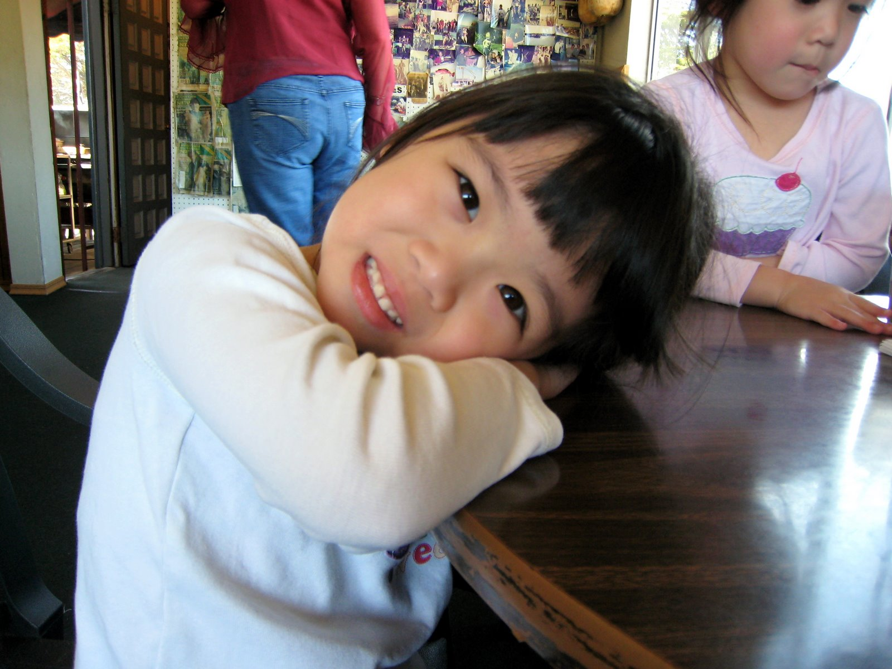

My Digital Trail reflects
on my early Internet memories. Spoofing off of the 1974 version of
the game The Oregon Trail, it traces the journey of the Internet
progessing from a fun and innocent place for me into an addictive, scary one
as I got older and technology progressed.
[dedicated to baby madi.]